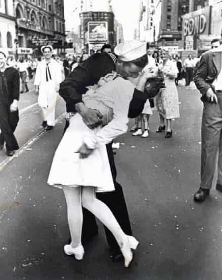

Emmanuel is a pompous git who enjoys the company of girly mistresses, spirited men, endless buffets and luxurious clothes. He can be found on Twitter at @Goldsteineum.


If you’re reading this, you already have an advantage over most men going out at night. You’ve shown you want to focus on getting laid, instead of just following your wolf-pack of bros around to whatever strikes their fancy, at that moment. That’s a recipe for failure. Most men going out are too confused or ashamed to admit that they want to get laid, so they can’t bring themselves to ask, “what makes a bar great for getting laid.” They’ll say they’re going out “to have fun” or “to drink with friends.”
Personally, I don’t suffer from any such delusions. I’m comfortable with the fact that I’m only going out to bars to get laid. I’ve been to a great variety of bars and met with success and failure countless times. And it wasn’t random – the best bars for getting laid had certain traits. The more of these traits they had, the more efficient they were for getting laid. Here they are:
In at least one part of the bar, noise levels should be moderate. Generally, you have to talk to a girl before you can fuck her. Girls feel more comfortable going home with a man they’ve talked to. The quieter your immediate surroundings, the easier it is to have a good conversation. You can check Yelp for the noise levels of venues.
I’ll admit, this one is personal – some guys thrive in loud environments, while other men can’t be heard in these joints, or even carry on conversations. I’m in the second group – I get exhausted by having to constantly restart conversations, and answer to “What? What?” so I avoid overly loud places.

People who smoke are cooler and sluttier. Smoking sections are always quieter than the rest of the bar, because people like to talk when they smoke – and your conversations will benefit. Carry a pack of smokes so you can use the Greatest Opener of All Time. The mere act of smoking can improve your body language as long as the cigarette is lit – you’ll start blowing smoke in her face in a fit of supreme indifference, and that will only pique her interest further.

The pours are strong, and people drink to excess. Even the people who aren’t drunk will feel less inhibited. At one such bar recently, I had a hot young thing grabbing my ass as an icebreaker – and she turned out to be sober. Everyone else drinking hard was enough to loosen her up.
Upscale bars tend to have a better female to male ratio, and the girls are looking to mingle. At the shittier bars, girls will roll in with boyfriends and platonic friends, making them more closed off to your approach. College bars are an exception to this pattern – college bars can be middle of the road or even divey and still be as fertile as their competition.
You see other men successfully meeting – and kissing – women they just met. These bars attract women who are comfortable getting down with strangers. Never underestimate the power of suggestion, and its ability to influence a girl’s willingness to hook up with you.

The layout promotes mingling among people, instead of balkanization into private tables and separate seating. Look for places where people are casually socializing with strangers.
Girls like to feel like they’re at the center of the action. They’re more drawn to bars that are in the hot parts of town and bars that are new, and getting lots of attention in the local cool crowd.
You want a bar that’s in a part of town where social networks are weaker. Certain parts of town have more natives than other parts. When someone is not a native, their social networks are weaker, and the hot girls of this group especially are more willing to meet strange men. Every town has neighborhoods where transplants are common, and others where natives dominate. Hang out in the transplant ‘hoods.
The venue shouldn’t be dominated by a live band. It’s better for it not to have a live band, or there at least be rooms where the band can be avoided. A live band will easily cockblock you – the girl will be enamored by their strutting on stage, while you are trying to win her attention. You’ll have to try so hard to get anywhere that you’ll probably come off as pathetic anyway, unless you really are there for the band.
Choosing a bar is like playing poker. Even when you play the right hand in poker, you could lose the round. But you win over time by playing the right hand, every round. Choosing bars is the same – you could go to the worst bar in the world tonight and meet the girls of your dreams there… but some bars will yield more results, more consistently. You will never know what would’ve happened if you went elsewhere, but by going to the best bar for you, you’re maximizing your return in the long run.
You may find you did well the first time you went to a bar, and then the magic never returns on subsequent visits. It’s time to move on. Find the bars that give you a consistent return, and patronize them until your results there falter. You’re more like an old man obsessed with his retirement account – you’re looking for steady consistent returns.
Read Next: The 5 Easiest Clubs In The World To Get Laid